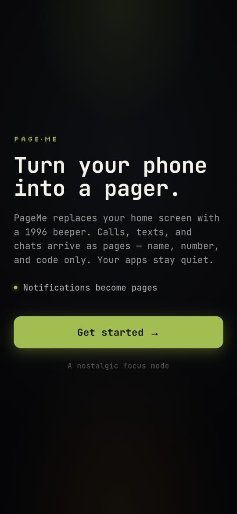
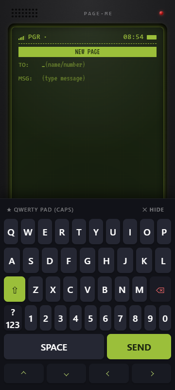

Messages, simplified
SMS, WhatsApp, and allowed notifications arrive in a grouped pager inbox. Reply without opening the source app.
Available on Google Play
Turn your Android into a pager.
Calls, texts, and chats arrive as pages. Your home screen becomes a quiet 1996 beeper, so the next thing you open is your life.
LIVE SIGNAL
Use the pager keys. The screen responds like PageMe, with only the information needed for the moment.
WED, AUG 12
09:10 AM
SELECT A KEY
00 / HOME
PageMe keeps the essential signal and removes the visual pull of a normal launcher.
Incoming alerts become compact pages while weather and repeated notifications stay out of the inbox.
THE REAL APP


KEEP THE SIGNAL
SMS, WhatsApp, and allowed notifications arrive in a grouped pager inbox. Reply without opening the source app.
With your permission, PageMe becomes the temporary Home app and keeps distracting launchers behind a focused interface.
Start a timed focus session, choose a soothing sound, and open only the study apps you deliberately allowed.
Schedule Pager Mode or scan matching calendar events so your focus environment is ready when the session begins.
GOOGLE PLAY BETA
Join the PageMe Android beta and install it securely from Google Play.
Use the Google account invited to the current PageMe testing track.
Accept the testing invitation, then install PageMe from its Google Play page.
Open PageMe and approve only the Android capabilities needed for the features you choose.
Invitation beta | Android 8.0+
The current Google Play beta is invitation-only while PageMe completes Google's required testing review.
PERMISSION, NOT ASSUMPTION
Notification access turns alerts into pages. Do Not Disturb keeps other alerts quiet. Home-app access lets Pager Mode replace the launcher. Calendar, nearby-device, and torch access are requested only for the features that need them; contact selection uses Android's picker.
On-device first. Notification processing, focus preferences, and your pager inbox are stored on the phone. Registration and PageMe-to-PageMe delivery use the PageMe service.
Read beta privacy notesYOUR ATTENTION IS YOURS
Keep the messages that matter. Leave the feed behind.